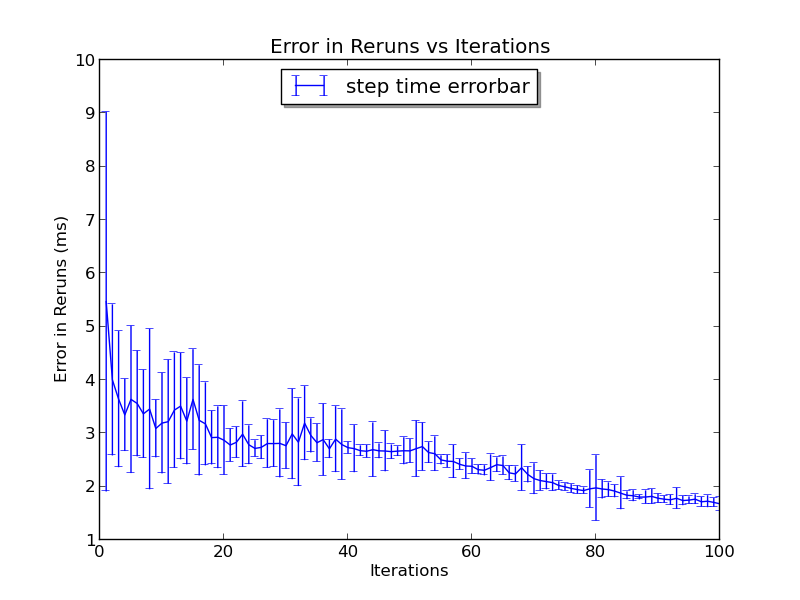
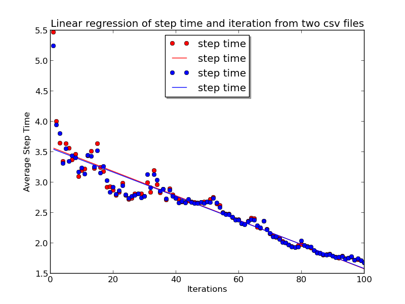
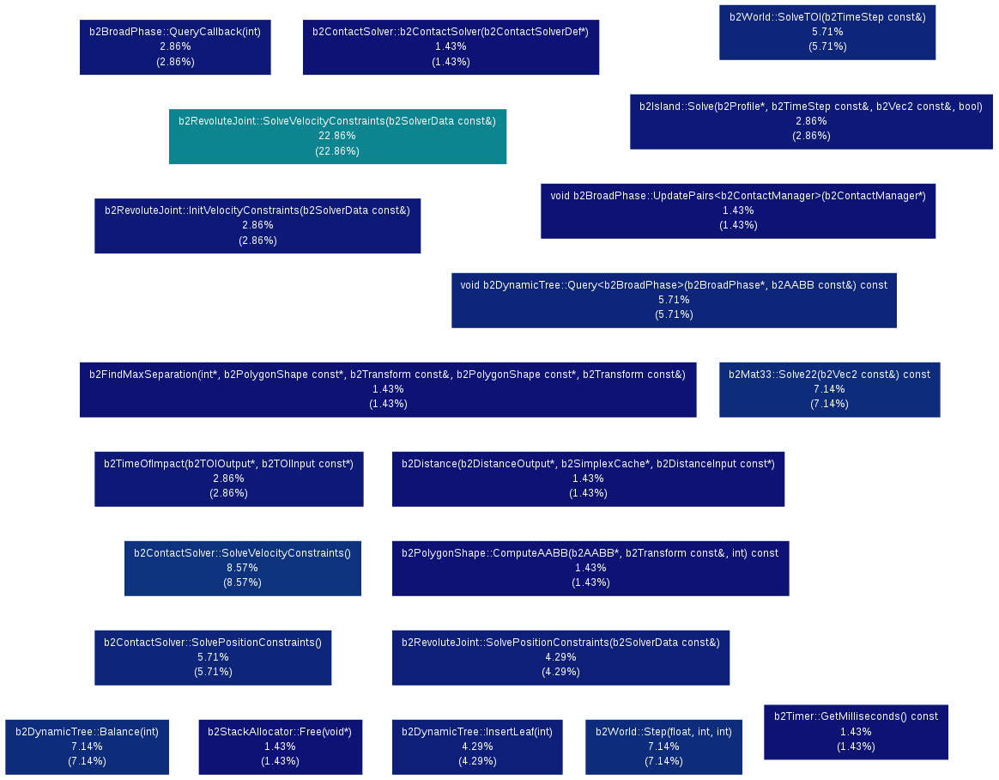
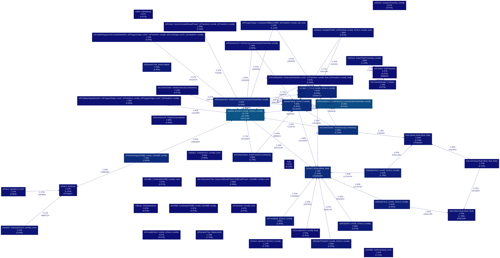

CS296 Project : Crane Arm Simulation
Introduction
Box2D
is a 2D rigid body simulation library for games.It is a physics engine written in C++ for animation.As our course project we have designed a crane arm for lifing weights using Box2D.In this report we first discuss our original design and later we discuss our accomplished design and analysis of various parts of its code.
Original Design
Brief Description
Hydraulic arm is used to lift and lower heavy objects.When we apply force on the hydraulic piston this moves the arms of the crane, which rotate on pivot joints and this causes force on the other piston which finally causes tension in rope.This tension in rope is used to move the arms required to hold or lower the objects.
Final Design
Overall Description
In this simulation we wanted to transfer the weights to container far away.This crane arm is controlled by the user.So we can lift the weights and place them on the conveyor belt.This converyor belt carries these weights to container.This is the overall idea of simulation.
Description of Parts of Crane
The crane is made up of both static and dynamic parts.The first arm is static and is attached to ground.Except the first arm all the remaining arms are dynamic.The second arm is connected to first arm and third arm by revoluting joints.Each revoluting joint has motor to control torque on that revoluting joint.The third arm is connected to second arm and to arms which are used to widen holder arms.Both the connecting joints are revolute joints.Finally both the holder arms are connected to arm which is used to widen these.Learn more about Box2D here
Timing Analysis of Simulation
Average Step Time, Average Loop Time VS number of Iterations
This is graph between Average Step Time, Average Loop Time versus number of iterations.
Average step time is independent of number of iterations because whatever may be number of iterations it takes same time for a step.So the Average step time versus number of iteration should be constant, since we have drawn histograms all of them should be of same height.The graph obtained also satisfies what we have observed.
Coming to the Average loop time versus this is nothing but (number of iterations * step time), since step time is independent of number of iterations we expect the graph to be linear, Indeed the graph is linear.Therefore our observations are correct.
Average Step Time, Collision Resolution Time, Velocity Update Time, Position Update Time, and their sums VS Number of Iterations
This is graph between the average of step time, average collision resolution time, average velocity update time, position update time, and their sum versus number of iterations.
From the graph we can see that the averages of step time,collision resolution time, velocity update time, position update time are independent of n (with some disturbances when n is small). We can see that position update time and collision resolution time are nearly same.These time spent in updating positions and resolving collisons is less than velocity update time.So the simulation take more time in calculating velocities of bodies. We can observe that step size is more than sum of above times, from this we can infer that some time is spent on other parts.
Errors in Reruns VS Number of Iterations
This is graph between step time versus number of iterations along with error bars indicating variations in step time over all reruns.
From the graph we can observe that variation in step size over all reruns decreases, therefore all the error bars size decreases.

Best Fit Line for Average Step Time,15 Random ReRuns of Iterations VS Iterations
This is graph of Best Fit Lines of Average Step Time, 15 ReRuns of a each iteration versus number of iterations.As we have observed in graph1 average step time is independent of number of iterations.So the expected best fit line should be nearly horizontal if n (number of iterations) is very large.From the obtained graph we can see that this is the case.

We have generated all these plots using GNU plot
Profiling of Code
Brief information on code profiling
1. There are two modes in which we can compile base code for profiling.
2. Generally profiling in done inorder to find which parts of code are using more resources, to find bugs in code and to optimise overall running time and resources used by program.
3. They are namely Debug profiling mode and Release profiling mode.
4. In release profiling mode we use compiler options like -O3, -O2 and in debug profiling mode we omit these.
5. -O3 and -O2 are compiler option used to optimize the runtime by supressing many function calls and runs the code in elegant manner, therefore we find less function calls in release profiling mode.
6. In Debug profiling mode we don't use these above mentioned optimizing compiler options, so we find much more branches and more time for running the program.
7. See the graphs obtained release.png and debug.png in images folder for distinction between these profiling modes.
Inferences from Release profiling mode Graph
1. For very smaller number of iterations we are getting erroneous data. This is happening because some funcitons are taking very less time and are being ignored, and for moderate number of iterations some function are taking less time and are not being considered. So we are taking 50,000 iteration to get clear picture of function which are being called in program.
2. In this mode for 50,000 iterations SolveVelocityConstraints function in b2ContactSolver class is taking maximum time nearly 50\% in every iteration.
3. SolveVelocityConstraints is taking maximux time because at every step it has to calculate the velocity vectors of each and every body involved in the simulation by applying laws of collision and solving the velocties according to them.
4. The remaining funcitons like Step, SolvePositionConstraits, TimeOfImpact take nearly same time in every iteration.

Inferences from Debug profiling mode Graph
1. For very smaller number of iterations we are getting erroneous data. This is happening because some funcitons are taking very less time and are being ignored, and from moderate number of iteration we are getting valid data because this is Debug profiling mode and we are not using any optimizing compiler option so we are able to see all function calls which were made
in the program and were are getting significant noticable amount of time for each function. Hence only moderate number of iteration are required for this.
2. In this mode for SolveVelocityConstraints function in b2ContactSolver class is taking maximum time nearly 50\% in every iteration.
3. SolveVelocityConstraints is taking maximux time because at every step it has to calculate the velocity vectors of each and every body involved in the simulation by applying laws of collision and solving the velocties according to them.
4. The remaining funcitons like Step, SolvePositionConstraits, TimeOfImpact take nearly same time in every iteration.
5. In this we can see the relationship between callee-caller ie. the functions which are invoked by calling a parent function.
From this we can also identify the amount of time and resources used by child functions. This helps in identifying which subfunction calls taking more time and we can reduce them.
6. Note that coloring of blocks are assigned according to usage of time and arrows point to all function calls inside a parent
function.

Timing Differences in Release and Debug profiling modes
Release Profiling Mode
Number of Iterations: 50000
Average time per step is 0.202182 ms
Average time for collisions is 0.002808 ms
Average time for velocity updates is 0.020555 ms
Average time for position updates is 0.107513 ms
Debug Profiling Mode
Number of Iterations: 50000
Average time per step is 1.022796 ms
Average time for collisions is 0.026108 ms
Average time for velocity updates is 0.199134 ms
Average time for position updates is 0.407137 ms
From the above data we can see that time when compiled with Release profiling mode takes less time than Debug profiling mode as expected.Read more about profiling here
What Makes Our Design Interesting
Our design shows process in which cranes work.These type of arms are very crucial in many industries and many machines for example in assembly lines and cranes.In this simple and funny design user can control the machine using keys.This makes our desing interesting.
Conclusion
We have discussed the various components of our simulation model, covering design, special features and timing analysis.We hope the reader found this report interesting and informative.
Authors
Venkatesh Dupadda 120050039120050039@iitb.ac.in
Siddhant Rajagopalan 120100006rajgo94@gmail.com
B.N.S Akshay Veer 120050062 akshayveer@iitb.ac.in